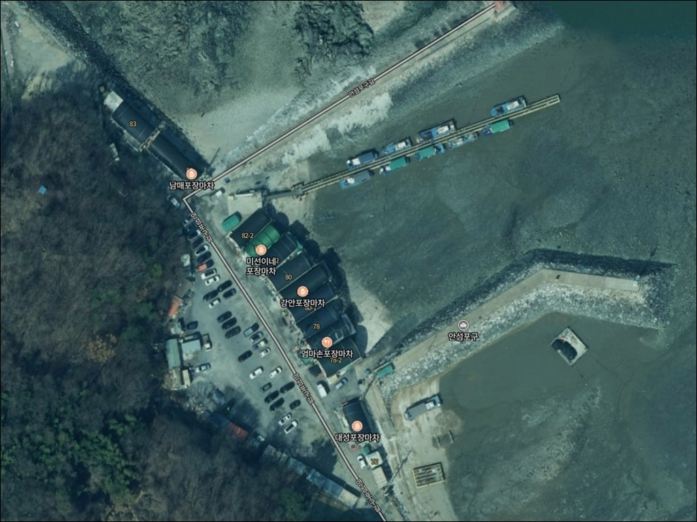
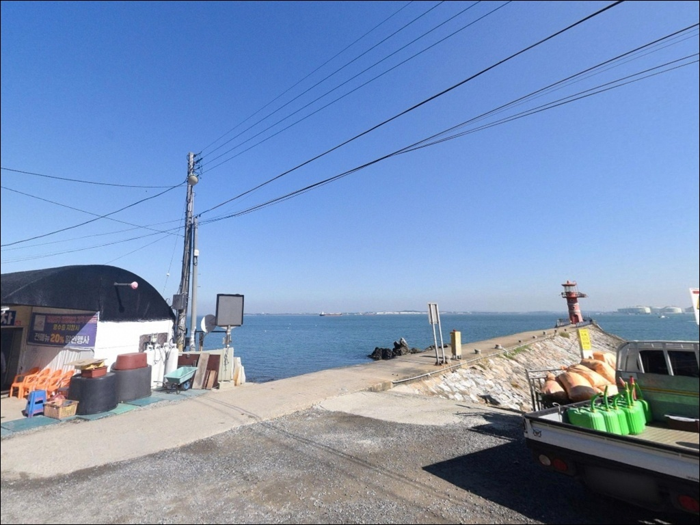
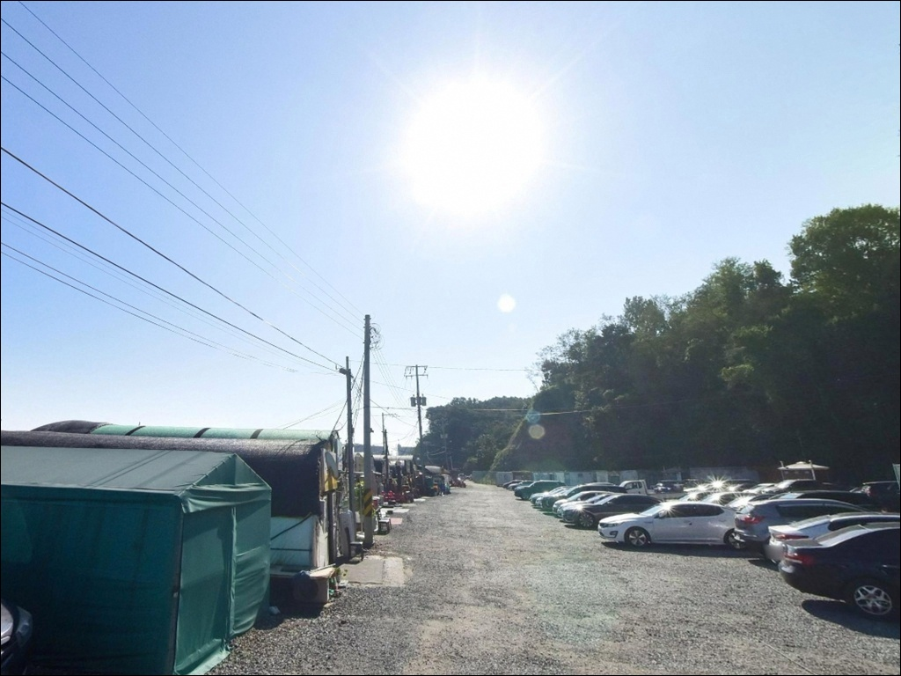
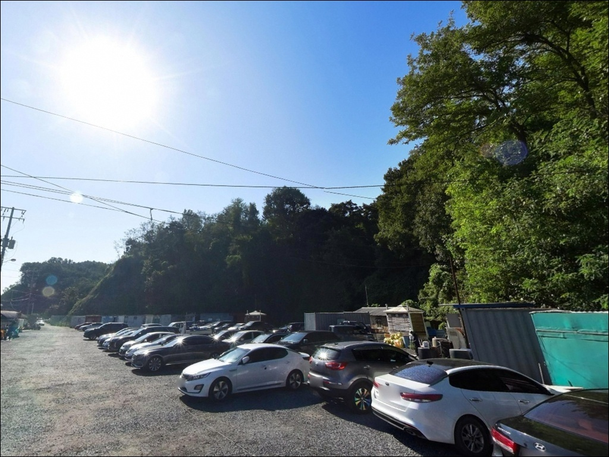
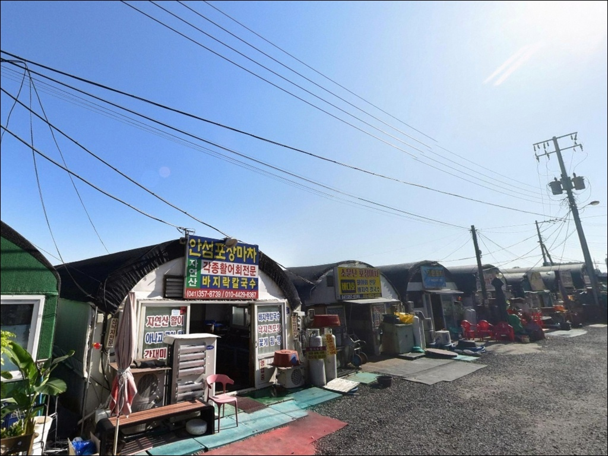
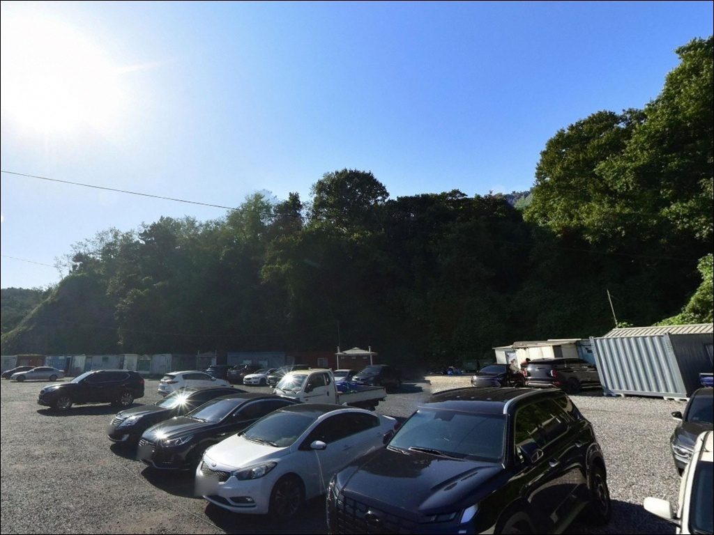
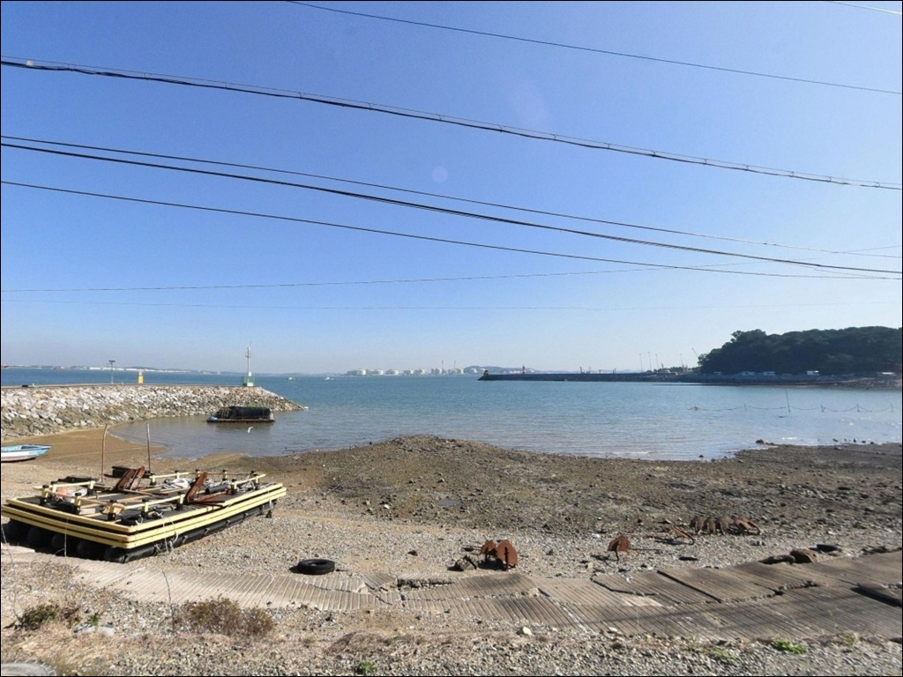
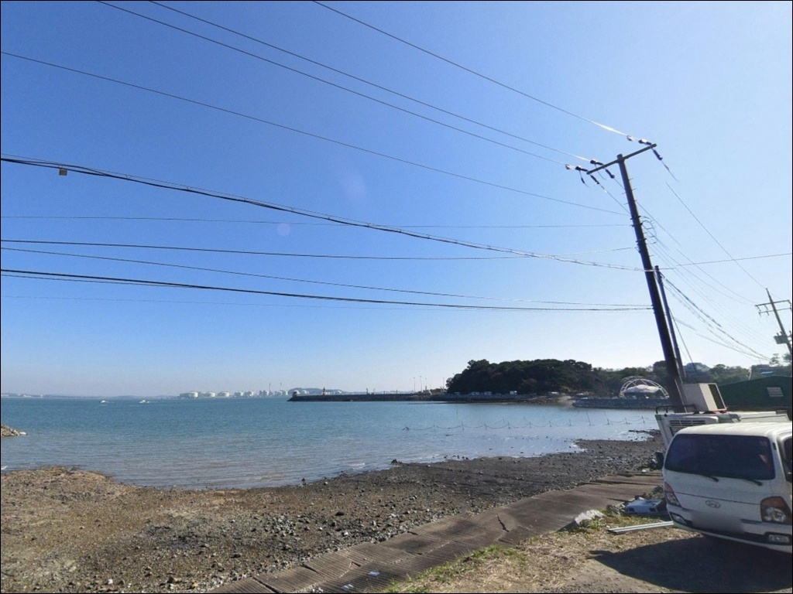
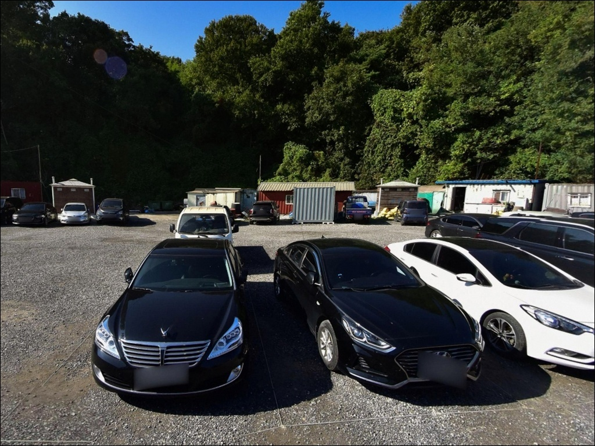

이 페이지에는 광고(제휴 링크 포함)가 있으며, 광고 링크를 통해 구매하면 운영자가 판매 수익 또는 수수료를 받을 수 있습니다. 포인트 사진: 카카오맵 스카이뷰·로드뷰. 이 페이지의 지도·사진 이미지는 카카오맵의 실제 서비스 이미지와 다를 수 있습니다.

안섬포구
충남 당진시 송악읍 고대리 166-49
안섬포구 방문에서 가장 흔하게 틀리는 판단은
물때 확인 없이 출발하는 것입니다.
아산만은 조석 간만의 차가 국내 최대 수준으로,
간조 때는 포구 앞 갯벌이 드러나
낚시 발판 자체가 사라지는 지형입니다.
들물 타이밍을 놓치면 채비를 펼 자리조차
구하기 어려운 상황을 맞닥뜨릴 수 있습니다.
원래 섬이었던 안섬은
간척사업으로 육지와 연결된 포구입니다.
현재는 아산만 연안에 작은 선착장과
친수공원, 빨간 무인 등대가 자리한
조용한 어촌 포구 형태를 갖추고 있으며,
칼국수 포장마차 거리와 등대 경관 덕분에
드라이브·식사 목적지로도 알려진 곳입니다.
이 글은 안섬포구의
진입 환경, 물때 판단 기준,
낚시 방식별 적합성, 차박 체류 조건에 집중합니다.
조황 단정이나 특정 어종 보장은
이 글의 범위에 포함되지 않습니다.

안섬포구로 향하는 주요 경로는
서해안고속도로 송악IC에서
38번 국도를 타고 접근하는 방식입니다.
부곡국가공단 방향을 지나
안섬 이정표를 따라가는 구간은
산업단지 도로 특성상 폭이 비교적 넓은 편이며,
포구까지 차량 진입 자체는 어렵지 않습니다.
다만 포구 직전 마지막 구간은
어촌 마을 도로 형태로 폭이 좁아지는
구간이 포함되어 있는 편입니다.
캠핑카나 대형 SUV라면
출발 전 지도 앱 위성 보기로
진입로 말단 구간을 미리 확인해두는 것이
현장에서 당황을 줄여줍니다.
주차는 포구 초입
안섬친수공원 주차장 활용이 가장 일반적입니다.
무료주차가 가능하며,
공원 내 공간이 있어
소형~중형 차량 기준으로는
회차에 큰 어려움이 없는 수준입니다.

안섬포구에서 차박 거점으로 활용 가능한 공간은
안섬친수공원 주변입니다.
민가 밀집도가 낮은 편이고
포구와 공원이 이어진 구조라,
야간에는 비교적 조용한 분위기가 유지됩니다.
다만 칼국수 포장마차 거리 운영 시간대에는
상가 조명과 차량 통행이 섞이는 환경으로,
완전 고립형 차박 분위기를 기대하기는 어렵습니다.
야간 낚시를 겸하는 경우라면
포장마차 거리 방향보다
선착장 쪽이 조용한 편입니다.
아산만 만 구조 특성상
외해 너울 영향은 적은 편이나,
기상에 따라 바람이 강해지는 날도 있어
방풍 준비는 기본으로 챙겨야 합니다.
공원 내 야영과 취사는 금지입니다.
공공 주차장 내 야영·취사·불 피우기도
허용되지 않습니다.
이른 아침 들물 낚시를 위해
차 안에서 하룻밤 머무는 용도로는
조건이 갖춰진 편이나,
취사를 메인으로 계획하는 일정이라면
다른 포인트를 먼저 검토하는 편이 낫습니다.

안섬친수공원에 화장실이 마련되어 있습니다.
포구 인근 칼국수 포장마차 거리에는
해물칼국수와 해산물 요리를 파는 포차들이
성수기 기준으로 운영됩니다.
비수기에는 운영하지 않는 경우도 있어
방문 전 미리 확인하는 것이 좋습니다.
편의점은 포구 직접 반경 내에서
공식적으로 확인된 위치가 마땅치 않습니다.
부곡국가공단 방향으로 이동하면
편의시설이 있을 가능성이 있으나,
출발 전 지도 앱으로 따로 확인하는 편이
실용적입니다.
식수, 낚시 채비, 얼음 등
핵심 소품은 당진 시내에서 미리 챙겨 가는
방식이 안전합니다.

안섬포구 방문 전에
가장 먼저 할 일은 물때 확인입니다.
아산만은 평균 조차 6.1m, 최대 9.6m에 달하는
국내에서 조석 간만 차가 가장 큰 해역 중 하나입니다.
간조 시에는 갯벌이 드러나
선착장 저지대 접근 자체가 달라질 수 있으므로,
바다타임에서 고대리 기준 만조 시간을 확인하고
출발 시각을 들물 방향으로 맞추는 것이
이 포인트의 기본 전략입니다.
서해 기상은 변화가 빠른 편이라
당일 아침 기상청 서해 해상 예보를
한 번 더 확인하는 것이 낫습니다.
갯벌 바닥 특성상 밑걸림이 잦을 수 있어
여분 채비는 넉넉하게 준비하고 출발하는 편이 좋습니다.
포구 내 어선 조업 공간을 방해하지 않는
자리 선정이 기본 매너입니다.
야간 낚시 시에는 구명조끼와 헤드랜턴이 필수이며,
평택해양경찰서 안섬출장소가
포구 인근에 위치해 있습니다.

안섬포구는 아산만 내만 안쪽에 자리한
갯벌형 소형 포구입니다.
아산만은 충청남도와 경기도 사이에 형성된 내만으로
바닷물이 들어오는 전체 폭이 약 40km에 이르는
넓은 만 구조입니다.
내만 특성상 외해 파도 영향은 적은 편이나,
조위 변화 폭이 커
간조와 만조 사이 환경 차이가
다른 포인트에 비해 두드러집니다.
포구 앞 해안 제방에는
대금 형상을 한 8m 높이의 빨간 무인 등대가 있으며,
포구 앞 쌍바위는 밀물과 썰물에 따라
드러났다 잠겼다 하는 지형으로,
이 구간 주변에는
수심 변화 구간이 뚜렷하게 형성됩니다.
제방과 선착장이 낚시 발판이 되는 구조이며,
외항 노출이 적은 만 안쪽 포구일수록
들물 타이밍이 낚시 가능 여부를 결정짓습니다.
바닥은 갯벌 성격이 강한 편이라
만조를 향해 물이 들어오는
들물 타이밍이 어종 활성이 올라오는 시간대입니다.
간조에는 발판이 줄어드는 구조이므로
들물 시작 이후 정조 전까지를
주력 시간대로 보는 것이 이 포인트의 공략 기준입니다.
최신 조황은 가기 전에 꼭 검색해 보시기 바랍니다.

이 포인트에서 가장 현실적인 방식은
원투낚시입니다.
갯벌 바닥 위에 조류가 지나는 만 구조는
봉돌 채비를 멀리 보내
바닥층 어종을 기다리는 방식과 잘 맞습니다.
망둥어는 가을이 피크 시즌으로 알려져 있으며,
바닥이 갯벌인 지형에서
청갯지렁이 미끼 원투가 가장 무난한 접근법입니다.
숭어 찌낚시·떡밥낚시도 이 포인트 구조에 어울립니다.
만 안쪽 얕은 연안은 숭어 무리가
들어오기 좋은 조건을 갖추고 있으며,
선착장 주변 수로 구간에서
마릿수를 기대해볼 수 있는 편입니다.
봄~초여름 들물 타이밍에
활성이 올라오는 경향이 있습니다.
야간 원투낚시로는 붕장어를 노려볼 수 있습니다.
서해 갯벌 연안 포구 구조에서
야간 들물 타이밍에 바닥을 천천히 탐색하면
붕장어 입질을 기대해볼 수 있는 지형 조건입니다.
야간에는 구명조끼와 헤드랜턴을
반드시 갖춰야 하며,
만조 이후 발판 변화도 수시로 확인해야 합니다.

안섬포구 조류나 물때 조건이 맞지 않는 날이라면
같은 송악읍 소재의
한진포구가 기본 대안입니다.
동일 해안선 수계에 위치해
비슷한 조류 패턴을 공유하며,
방파제 원투 외에 선상낚시 선택지도 있어
조황이 여의치 않을 때
이동 효율이 좋은 포인트입니다.
안정적인 낚시 환경을 원한다면
서해대교 바다낚시터를 대안으로 검토할 수 있습니다.
당진 신평면 일대에 위치한 유료 낚시터로,
조황 변동을 최소화하면서
원투낚시를 즐기고 싶을 때 유효한 선택입니다.
당진권 서해 연안으로 시야를 넓히면
왜목마을, 장고항 방면으로
원투·루어 포인트가 분포해 있습니다.
안섬포구 상황이 부진한 날이라면
이 동선으로 이동하는 방식이 효율적이며,
출발 전 조황 검색 키워드에
"한진포구 조황"을 함께 넣어두면
대안 선택이 빠릅니다.

원투낚시로 망둥어나 숭어를 노리는 낚시인이라면,
안섬포구의 갯벌형 만 구조는
충분히 시도해볼 만한 조건을 갖추고 있습니다.
큰 조황을 기대하는 포인트보다는
서해 생활낚시를 가볍게 즐기는 목적에
더 잘 맞는 성격의 포인트입니다.
다만 물때 확인 없이 간조에 도착하면
낚시 발판이 사라지는 상황을
맞닥뜨릴 수 있습니다.
물때 확인, 진입로 사전 점검, 자급 준비,
이 세 가지를 갖추고 간다면
칼국수 한 그릇과 빨간 등대 경관,
서해 조망을 낚시와 함께 엮기 좋은 포인트입니다.
공원 취사 금지 조건만 지켜두면
빨간 등대 옆 조용한 포구에 차를 세우고
이른 들물 타이밍을 기다리는 차박 낚시 여행자에게,
서해 아산만 특유의 조용한 어촌 분위기를
즐기기에 나쁘지 않은 포인트입니다.